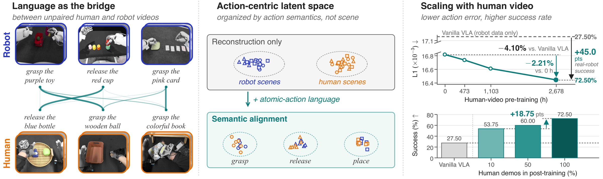
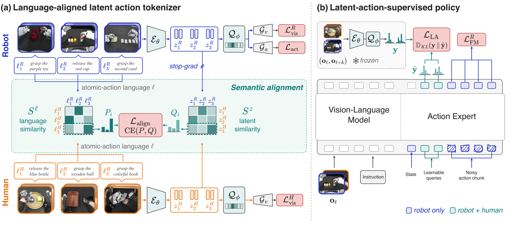
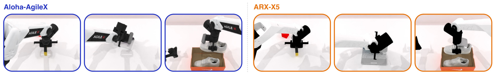
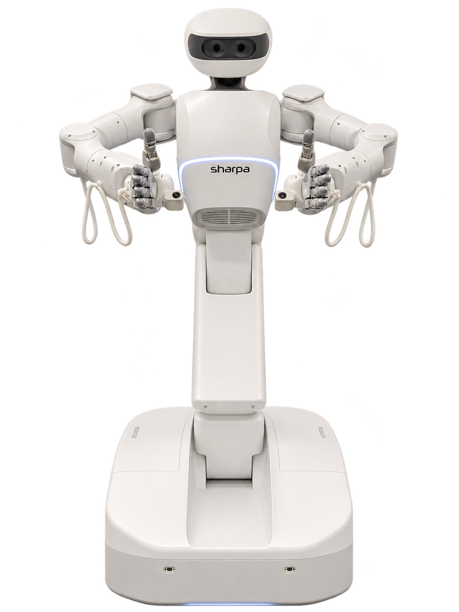
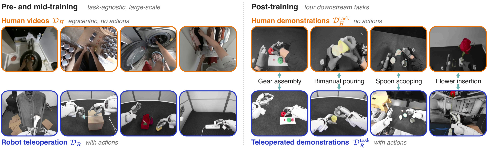
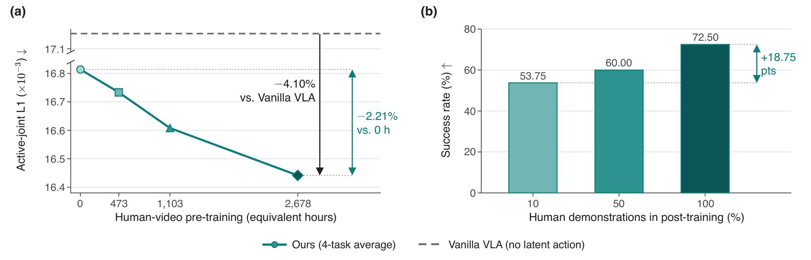
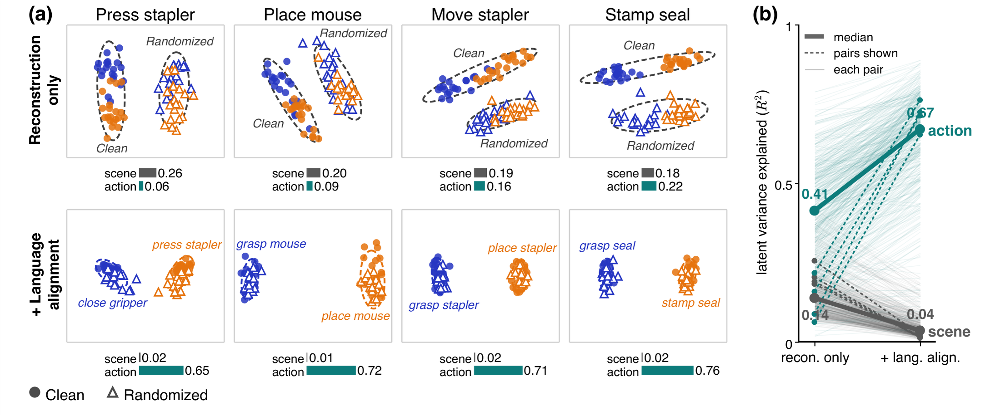
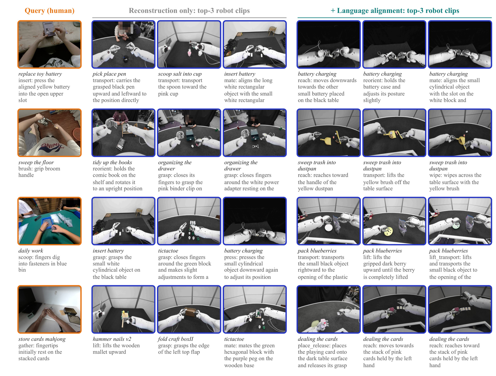
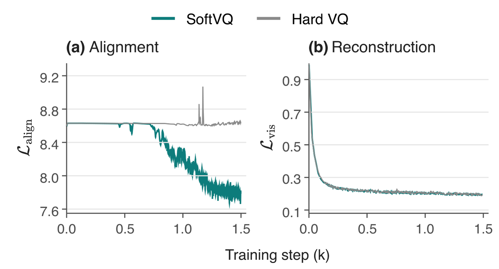

Grounding latents in robot control
Teleoperation data already provide ground-truth actions. A robot-only action decoder reconstructs the action chunk from the quantized latent and the initial state, which grounds robot latents directly in control.
1 Sharpa Robotics 2 SJTU-Sharpa Joint Lab for Embodied AI, SJTU * Equal contribution
SALA turns human videos into supervision for robot control.
Language aligns human and robot latent actions without paired data. Scaling human-video pre-training reduces action prediction error, while task-specific human demonstrations in post-training improve real-world success.

Embodied foundation models hinge on diverse robot interaction data, which are costly to collect. Egocentric human videos offer a complementary source of experience, and latent action models (LAMs) provide a popular means of leveraging these videos for policy supervision. Compared with world-action models (WAMs), LAMs can offer greater training efficiency and potentially lower inference costs by avoiding explicit pixel prediction during policy learning and execution. However, most existing LAMs learn latent actions solely through video reconstruction, which can cause their representations to cluster by visual appearance rather than by the underlying actions. As a result, they struggle to align human actions with their robot counterparts. To bridge the gap, we introduce SALA, which emphasizes establishing the semantic correspondence for latent actions. Without requiring paired data, we use the language descriptions of unpaired human and robot clips to estimate semantic similarities and supervise cross-embodiment correspondence. Specifically, we translate these similarities into soft neighborhood structures that guide human latent actions toward semantically related robot latents, while robot action reconstruction grounds the latent space in control. The resulting shared latent action space provides a unified supervision signal for training an embodied foundation model on both human and robot videos. Notably, latent action supervision enables scaling along two axes: (1) pre-training on increasing amounts of general human video consistently reduces robot action prediction error on downstream tasks, and (2) post-training on increasing amounts of task-specific human video substantially improves real-world robot task success rates.
SALA learns a latent action tokenizer aligned across embodiments by language supervision from atomic-action descriptions, and uses it to label human and robot videos as targets for a VLA policy.

Reconstruction constrains each latent to explain the transition within its own clip, but never relates human and robot executions of the same behavior. Latents can be dominated by scene appearance, so semantically similar actions need not lie close together.
Even when clips are recorded independently, descriptions such as grasp the cup
relate a human clip to many robot clips with graded similarity. SALA turns these relations into soft neighborhood targets, anchored on robot latents grounded in control.
Teleoperation data already provide ground-truth actions. A robot-only action decoder reconstructs the action chunk from the quantized latent and the initial state, which grounds robot latents directly in control.
Language similarity defines a soft neighborhood of robot clips for each human clip, guiding the corresponding neighborhood in latent space. A stop-gradient moves only human latents toward the control-grounded robot anchors.
Hard VQ assigns a one-hot code that changes only when the latent switches codes. SoftVQ represents each token as a categorical distribution over the codebook, varying smoothly with the latent, so tokens can express graded differences.
\pi_0-style policy: Qwen3-VL-4B VLM + 0.6B action expert with learnable latent-action queries. The VLM starts from Qwen3-VL-4B-Instruct weights, and the action expert starts from scratch. The tokenizer needs only video frames to label a clip, so pre-training needs neither action labels nor atomic-action descriptions.
Action-free human videos
Predict the latent actions that the language-aligned teacher assigns; scales with the amount of available human video.
Target-robot teleoperation
Ground latent-action predictions in robot actions through flow matching.
Task teleoperation + human demos
Human demonstrations need no robot to record, yet supervise the same action expert that controls the robot.
On RoboTwin 2.0 (50 bimanual tasks), videos of ARX-X5 stand in for human videos: 27,000 action-free trajectories (68 h), against only 2,500 Aloha-AgileX trajectories (9.2 h) with actions. We evaluate on Aloha-AgileX with 100 rollouts per task in clean and domain-randomized scenes.

Averaged over 50 tasks. WAMs and latent action methods are additionally trained on the ARX-X5 and Aloha-AgileX videos. PT = initialized from an official checkpoint pre-trained on large-scale robot data.
SALA starts from a general-purpose VLM, without a robot-pretrained checkpoint, and achieves the highest Random and average success. FastWAM and OpenWAM rival SALA in Clean but collapse in Random, where domain randomization changes scene appearance — future-video prediction must also model the scene, whereas language-aligned latents are organized by action.
We deploy SALA on a Sharpa North wheeled humanoid and study how it scales with egocentric human video at two levels: human-video pre-training up to 2,678 equivalent hours, and human demonstrations of each downstream task in post-training.

| Data | Embodiment | Actions | Lang. | Traj. | Hours |
|---|---|---|---|---|---|
| \mathcal{D}_H | Human | ✗ | partial | 71,582 | 2,678 |
| \mathcal{D}^{\mathrm{tok}}_H | Human | ✗ | ✓ | 27,406 | 983 |
| \mathcal{D}_R | Sharpa North | ✓ | ✓ | 70,859 | 888 |
Atomic-action descriptions are used only to train the tokenizer, so only the subset \mathcal{D}^{\mathrm{tok}}_H of human video is annotated. Human-video hours denote equivalent training exposure.

20 trials per task. All methods are post-trained on the same teleoperated demonstrations; the vanilla VLA shares our architecture but removes latent actions, so it cannot learn from human videos.

With budgets of 0, 473, 1,103, and 2,678 equivalent hours, the robot's validation action error decreases with every increase — with no additional robot data, since all models share the same teleoperation data in mid- and post-training. Even the 0 h variant beats the vanilla VLA: control-grounded latents shape the action expert and let task-specific human demonstrations supervise it during post-training.
Starting from the model pre-trained on 2,678 hours of human video and keeping teleoperated demonstrations fixed, post-training with 10%, 50%, and 100% of each task's human demonstrations raises the average success rate from 53.75% to 72.5%. Human demonstrations need no robot to record, so collecting more of them is an inexpensive way to improve a task, complementary to teleoperation.
Choose a task to watch on Sharpa North, at real-time or 4× speed.
Without alignment, ARX-X5 clips in three of the four illustrated tasks split by scene type with actions mixed. With alignment, they split by atomic action across scenes: the median latent variance explained by the action rises from 0.41 → 0.67, and by the scene drops from 0.14 → 0.04.

Each query (left) and its three nearest target-robot clips over all tasks, under the reconstruction-only tokenizer (middle) and SALA (right). Examples are selected.

| Top-1 retrieval over all tasks | Random | Recon. only | + Lang. align. | Language |
|---|---|---|---|---|
| RoboTwin 2.0: ARX-X5 → Aloha-AgileX | ||||
| Same atomic action (%) ↑ | 0.8 | 41.3 | 78.2 | – |
| End-effector displacement error (cm) ↓ | 8.03 | 2.89 | 2.58 | – |
| Real world: human → robot, shared tasks | ||||
| Same task (%) ↑ | 1.7 | 3.8 | 34.2 | 55.0 |
| Same verbs of both hands (%) ↑ | 4.1 | 6.2 | 17.0 | 66.4 |
| Language similarity ↑ | 0.00 | 0.04 | 0.32 | 1.00 |
| Real world: human → robot, tasks absent from robot data | ||||
| Language similarity ↑ | 0.00 | 0.06 | 0.31 | 1.00 |
Language similarity is rescaled so that Random scores 0 and retrieval by atomic-action descriptions scores 1. Language retrieval is omitted on RoboTwin 2.0, where scripted descriptions of the same atomic action are identical.
Success rates (%) on Aloha-AgileX; each variant changes one design choice and the policy is trained identically.

@misc{jin2026sala,
title = {SALA: Semantically Aligned Latent Actions Enable
Dual-Axis Scaling of Embodied Foundation Models},
author = {Jin, Jiachun and Zhou, Zetong and Wang, Haonan and Deng, Zhijie},
year = {2026},
url = {https://sala-vla.github.io/main.pdf}
}